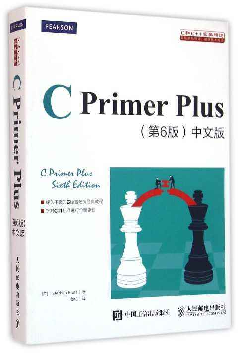

<!DOCTYPE html><html><head><meta charset="utf-8"><title>C语言与C++、C#究竟是什么关系？（附福利） | 技术学派</title><meta name="viewport" content="width=device-width,initial-scale=1,maximum-scale=1"><meta name="keywords" content="IT培训, Python, 大数据, 人工智能, Web前端, PHP, C"><meta name="description" content="简单来说，C++就像是C语言的亲弟弟，而C Sharp（C#）就是他们二者的远房亲戚（其实它更像是Java的表兄弟）。这三门语言都是十分优秀的编程语言，也都有很高的运行效率。这三种编程语言的应用范围很广阔，接下来技术学派就分别介绍一下三种语言的来历以及应用领域。C语言C语言诞生在大名鼎鼎的美国贝尔实验室，它的前身是B语言。C语言从诞生之初就获得了广大程序员的青睐，由于其简洁的语法，高效的执行效率（"><meta name="keywords" content="C"><meta property="og:type" content="article"><meta property="og:title" content="C语言与C++、C#究竟是什么关系？（附福利）"><meta property="og:url" content="http://www.JiShuXuePai.com/blog/学习答疑/学习答疑/C语言与C++、C Sharp究竟是什么关系？（附福利）/index.html"><meta property="og:site_name" content="技术学派"><meta property="og:description" content="简单来说，C++就像是C语言的亲弟弟，而C Sharp（C#）就是他们二者的远房亲戚（其实它更像是Java的表兄弟）。这三门语言都是十分优秀的编程语言，也都有很高的运行效率。这三种编程语言的应用范围很广阔，接下来技术学派就分别介绍一下三种语言的来历以及应用领域。C语言C语言诞生在大名鼎鼎的美国贝尔实验室，它的前身是B语言。C语言从诞生之初就获得了广大程序员的青睐，由于其简洁的语法，高效的执行效率（"><meta property="og:locale" content="zh-CN"><meta property="og:image" content="http://www.jishuxuepai.com/blog/学习答疑/学习答疑/C语言与C++、C%20Sharp究竟是什么关系？（附福利）/01.jpg"><meta property="og:updated_time" content="2018-06-06T09:27:41.726Z"><meta name="twitter:card" content="summary"><meta name="twitter:title" content="C语言与C++、C#究竟是什么关系？（附福利）"><meta name="twitter:description" content="简单来说，C++就像是C语言的亲弟弟，而C Sharp（C#）就是他们二者的远房亲戚（其实它更像是Java的表兄弟）。这三门语言都是十分优秀的编程语言，也都有很高的运行效率。这三种编程语言的应用范围很广阔，接下来技术学派就分别介绍一下三种语言的来历以及应用领域。C语言C语言诞生在大名鼎鼎的美国贝尔实验室，它的前身是B语言。C语言从诞生之初就获得了广大程序员的青睐，由于其简洁的语法，高效的执行效率（"><meta name="twitter:image" content="http://www.jishuxuepai.com/blog/学习答疑/学习答疑/C语言与C++、C%20Sharp究竟是什么关系？（附福利）/01.jpg"><link rel="stylesheet" href="/libs/bootstrap/bootstrap-grid.css"><link rel="stylesheet" href="/libs/font-awesome/css/font-awesome.min.css"><link rel="stylesheet" href="/libs/titillium-web/styles.css"><link rel="stylesheet" href="/libs/source-code-pro/styles.css"><link rel="stylesheet" href="/css/style.css"><script src="/libs/jquery/jquery.min.js"></script><link rel="stylesheet" href="/libs/lightgallery/css/lightgallery.min.css"><link rel="stylesheet" href="/libs/justified-gallery/justifiedGallery.min.css"><script>var _hmt=_hmt||[];!function(){var e=document.createElement("script");e.src="//hm.baidu.com/hm.js?4c1bd812de3c30edbaa2b803c66f0a04";var t=document.getElementsByTagName("script")[0];t.parentNode.insertBefore(e,t)}()</script></head></html><body><div id="wrap"><header id="header"><div id="header-outer" class="outer"><div class="container"><div class="container-inner"><div id="header-title"><h1 class="logo-wrap"><a href="/" class="logo"></a></h1></div><div id="header-inner" class="nav-container"><a id="main-nav-toggle" class="nav-icon fa fa-bars">菜单</a><div class="nav-container-inner"><ul id="main-nav"><li class="main-nav-list-item"><a class="main-nav-list-link" href="/">主页</a></li><li class="main-nav-list-item"><a class="main-nav-list-link" href="/edu/index.html">学编程</a></li><li class="main-nav-list-item"><a class="main-nav-list-link" href="/blog/">博客</a></li><li class="main-nav-list-item"><a class="main-nav-list-link" href="/tips.html">学习建议</a></li><li class="main-nav-list-item"><a class="main-nav-list-link" href="/about.html">关于</a></li></ul><nav id="sub-nav"><div id="search-form-wrap"><form class="search-form"><input type="text" class="ins-search-input search-form-input" placeholder="搜索"> <button type="submit" class="search-form-submit"></button></form><div class="ins-search"><div class="ins-search-mask"></div><div class="ins-search-container"><div class="ins-input-wrapper"><input type="text" class="ins-search-input" placeholder="想要查找什么..."> <span class="ins-close ins-selectable"><i class="fa fa-times-circle"></i></span></div><div class="ins-section-wrapper"><div class="ins-section-container"></div></div></div></div><script>window.INSIGHT_CONFIG={TRANSLATION:{POSTS:"文章",PAGES:"页面",CATEGORIES:"分类",TAGS:"标签",UNTITLED:"(未命名)"},ROOT_URL:"/",CONTENT_URL:"/content.json"}</script><script src="/js/insight.js"></script></div></nav></div></div></div></div></div></header><div class="container"><div class="main-body container-inner"><div class="main-body-inner"><section id="main"><div class="main-body-header"><h1 class="header"><a class="page-title-link" href="/categories/学习答疑/">学习答疑</a><div class="author"></div></h1></div><div class="main-body-content"><article id="post-学习答疑/C语言与C++、C Sharp究竟是什么关系？（附福利）" class="article article-single article-type-post" itemscope itemprop="blogPost"><div class="article-inner"><header class="article-header"><h1 class="article-title" itemprop="name">C语言与C++、C#究竟是什么关系？（附福利）</h1></header><div class="article-meta"><div class="article-date"><a href="/blog/学习答疑/学习答疑/C语言与C++、C Sharp究竟是什么关系？（附福利）/" class="article-date"><time datetime="2018-06-06T09:11:23.432Z" itemprop="datePublished">2018-06-06</time></a></div><div class="article-tag"><i class="fa fa-tag"></i> <a class="tag-link" href="/tags/C/">C</a></div></div><div class="article-entry" itemprop="articleBody"><p><strong>简单来说，C++就像是C语言的亲弟弟，而C Sharp（C#）就是他们二者的远房亲戚（其实它更像是Java的表兄弟）。</strong>这三门语言都是十分优秀的编程语言，也都有很高的运行效率。这三种编程语言的应用范围很广阔，接下来技术学派就分别介绍一下三种语言的来历以及应用领域。</p><h3 id="C语言"><a href="#C语言" class="headerlink" title="C语言"></a>C语言</h3><p>C语言诞生在大名鼎鼎的美国贝尔实验室，它的前身是B语言。C语言从诞生之初就获得了广大程序员的青睐，由于其简洁的语法，高效的执行效率（比较接近汇编的性能），它既具有高级语言的特点，又具有汇编语言的特点。在很多领域获得了广泛应用。比如操作系统，图像处理算法，硬件驱动，嵌入式设备编程等等。（底部有彩蛋）</p><p></p><h3 id="C"><a href="#C" class="headerlink" title="C++"></a>C++</h3><p>尽管C语言已经足够优秀，但它毕竟是一门面向过程的编程语言，不符合人的思维习惯（人脑的思维习惯有点像面向对象）。于是在这种背景下就诞生了更加强大的C++,之所以说C++是C语言的亲弟弟，是因为C++同样诞生在贝尔实验室。C++在C的基础上增加了数据封装，继承，多态等编程特性，同时又全部兼容了C语言，使之成为C++的一个子集。C++是一种最广泛支持范式的编程语言，比较难学，涉及到了指针的概念。指针会比较头疼。当然如果C学的不错，C++上手也会快。但C++不支持垃圾回收机制。C++语言被广泛用在操作系统，大型应用软件的开发中。</p><p></p><h3 id="C-1"><a href="#C-1" class="headerlink" title="C"></a>C</h3><p>C#是由微软公司开发出来用来抗衡Java的一款现代编程语言（具有安全，稳定，简单的特点）。它吸收了很多Java语言的优点，但微软公司为了避免法律纠纷，下意识的将其语法规则向C++看齐（C#其实就是C++++）。C#的语法简单，可以快速上手，开发效率很高，被广泛应用在了各类应用软件，游戏开发之中。</p><p></p><p><strong>总结：</strong></p><ol><li>C语言是完全面向过程的语言，用于开发较小规模的程序效率会很高，但是规模较大的程序，就显得代码量臃肿，编写效率就会下降。</li><li>C++是半面相对象，引入了类的封装性、继承性、多态性大大简化程序编写，提到了代码重用率。<br>C语言和C++的关系：C++既是面向过程又是面向对象，而且它还继承了C语言的所有优点，并且对C语言功能做了很多扩充，可以认为C++就是C语言的增强版。</li><li>C#是完全面向对象的语言，简单易学，开发效率非常高。<br>关于这三种语言的关系就介绍这么多，想要阅读这3本书籍的小伙伴，可以点击技术学派头像-右上角-私信我发送“C语言电子书”即可。</li></ol><p>分享 IT 技术和行业经验，请关注-技术学派。</p></div><footer class="article-footer"><a data-url="http://www.JiShuXuePai.com/blog/学习答疑/学习答疑/C语言与C++、C Sharp究竟是什么关系？（附福利）/" data-id="cji2xil8p00013tfyrftw7co5" class="article-share-link"><i class="fa fa-share"></i>分享到</a><script>!function(n){n("body").on("click",function(){n(".article-share-box.on").removeClass("on")}).on("click",".article-share-link",function(t){t.stopPropagation();var e,a=n(this),o=a.attr("data-url"),r=encodeURIComponent(o),i="article-share-box-"+a.attr("data-id"),s=a.offset();if(n("#"+i).length){if((e=n("#"+i)).hasClass("on"))return void e.removeClass("on")}else{var l=['<div id="'+i+'" class="article-share-box">','<input class="article-share-input" value="'+o+'">','<div class="article-share-links">','<a href="https://twitter.com/intent/tweet?url='+r+'" class="article-share-twitter" target="_blank" title="Twitter"></a>','<a href="https://www.facebook.com/sharer.php?u='+r+'" class="article-share-facebook" target="_blank" title="Facebook"></a>','<a href="http://pinterest.com/pin/create/button/?url='+r+'" class="article-share-pinterest" target="_blank" title="Pinterest"></a>','<a href="https://plus.google.com/share?url='+r+'" class="article-share-google" target="_blank" title="Google+"></a>',"</div>","</div>"].join("");e=n(l),n("body").append(e)}n(".article-share-box.on").hide(),e.css({top:s.top+25,left:s.left}).addClass("on")}).on("click",".article-share-box",function(t){t.stopPropagation()}).on("click",".article-share-box-input",function(){n(this).select()}).on("click",".article-share-box-link",function(t){t.preventDefault(),t.stopPropagation(),window.open(this.href,"article-share-box-window-"+Date.now(),"width=500,height=450")})}(jQuery)</script></footer></div></article><section id="comments"><div id="gitalk_frame"></div></section></div></section><aside id="sidebar"><a class="sidebar-toggle" title="Expand Sidebar"><i class="toggle icon"></i></a><div class="sidebar-top"><p>关注我 :</p><ul class="social-links"><li><a class="social-tooltip" title="火星时代" href="http://edu.hxsd.com/edunew/topics/webfull/index.html" target="_blank"><i class="icon fa fa-dribbble"></i></a></li><li><a class="social-tooltip" title="weibo" href="#" target="_blank"><i class="icon fa fa-weibo"></i></a></li><li><a class="social-tooltip" title="rss" href="/atom.xml" target="_blank"><i class="icon fa fa-rss"></i></a></li></ul></div><nav id="article-nav"><a href="/blog/学习答疑/学习答疑/现在为什么越来越多的人想学编程？/" id="article-nav-newer" class="article-nav-link-wrap"><strong class="article-nav-caption">下一篇</strong><p class="article-nav-title">现在为什么越来越多的人想学编程？</p><i class="icon fa fa-chevron-right" id="icon-chevron-right"></i> </a><a href="/blog/插件资源库/插件资源库/6个最高效的语言处理Python库，你用过几个？/" id="article-nav-older" class="article-nav-link-wrap"><strong class="article-nav-caption">上一篇</strong><p class="article-nav-title">6个最高效的语言处理Python库，你用过几个？</p><i class="icon fa fa-chevron-left" id="icon-chevron-left"></i></a></nav><div class="widgets-container"><div class="widget-wrap widget-list"><h3 class="widget-title">分类</h3><div class="widget"><ul class="category-list"><li class="category-list-item"><a class="category-list-link" href="/categories/animate/">animate</a><span class="category-list-count">17</span></li><li class="category-list-item"><a class="category-list-link" href="/categories/git/">git</a><span class="category-list-count">1</span></li><li class="category-list-item"><a class="category-list-link" href="/categories/html/">html</a><span class="category-list-count">2</span></li><li class="category-list-item"><a class="category-list-link" href="/categories/js/">js</a><span class="category-list-count">5</span></li><li class="category-list-item"><a class="category-list-link" href="/categories/php/">php</a><span class="category-list-count">3</span></li><li class="category-list-item"><a class="category-list-link" href="/categories/vue/">vue</a><span class="category-list-count">1</span></li><li class="category-list-item"><a class="category-list-link" href="/categories/学习答疑/">学习答疑</a><span class="category-list-count">16</span></li><li class="category-list-item"><a class="category-list-link" href="/categories/插件资源库/">插件资源库</a><span class="category-list-count">4</span></li></ul></div></div><link rel="stylesheet" href="/css/tech/toc.css"><div class="widget-wrap widget-list widget-toc"><h3 class="widget-title">目录</h3><div class="widget"><div class="toc"></div><link rel="stylesheet" href="https://cdnjs.cloudflare.com/ajax/libs/tocbot/3.0.5/tocbot.css"><script src="https://cdnjs.cloudflare.com/ajax/libs/tocbot/3.0.5/tocbot.min.js"></script><script>$(function(){$(".main-body-content").find("h1,h2,h3").each(function(t){$(this).attr("id")||$(this).attr("id","list"+t)}),tocbot.init({tocSelector:".toc",contentSelector:".main-body-content",headingSelector:"h1, h2, h3",collapseDepth:2,positionFixedSelector:".widget-toc",fixedSidebarOffset:595,includeHtml:!1})})</script></div></div><div class="widget-wrap widget-list"><h3 class="widget-title">标签</h3><div class="widget"><ul class="tag-list"><li class="tag-list-item"><a class="tag-list-link" href="/tags/C/">C</a><span class="tag-list-count">1</span></li><li class="tag-list-item"><a class="tag-list-link" href="/tags/python/">python</a><span class="tag-list-count">6</span></li><li class="tag-list-item"><a class="tag-list-link" href="/tags/web前端/">web前端</a><span class="tag-list-count">2</span></li></ul></div></div><div class="widget-wrap widget-float"><h3 class="widget-title">标签云</h3><div class="widget tagcloud"><a href="/tags/C/" style="font-size:10px">C</a> <a href="/tags/python/" style="font-size:20px">python</a> <a href="/tags/web前端/" style="font-size:15px">web前端</a></div></div><div class="widget-wrap widget-list"><h3 class="widget-title">链接</h3><div class="widget"><ul><li><a href="http://edu.hxsd.com/edunew/topics/webfull/index.html">火星时代</a></li></ul></div></div></div></aside><script>$(function(){$(window).scroll(function(){240<=$(document).scrollTop()?($("#sidebar .sidebar-toggle").addClass("fix"),"block"==$("#sidebar .sidebar-toggle").css("display")&&$(".is-position-fixed").css("top","35px")):$("#sidebar .sidebar-toggle").removeClass("fix")})})</script></div></div></div><footer id="footer"><div class="top"><div class="inner"><div class="list"><div class="left clearfix"><dl><dt>关于我们</dt><dd><a href="/about.html" target="_blank">公司简介</a></dd><dd><a href="edu/index.html" target="_blank">联系我们</a></dd></dl><dl><dt>校区攻略</dt><dd><a href="edu/index.html" target="_blank">校区环境</a></dd><dd><a href="edu/index.html" target="_blank">住宿攻略</a></dd><dd><a href="edu/index.html" target="_blank">来校路线</a></dd></dl><dl><dt>课程培训</dt><dd><a href="edu/python.html" target="_blank">Python</a></dd><dd><a href="edu/python.html" target="_blank">Web前端</a></dd><dd><a href="edu/python.html" target="_blank">PHP</a></dd><dd><a href="edu/python.html" target="_blank">人工智能</a></dd><dd><a href="edu/python.html" target="_blank">大数据</a></dd></dl><dl><dt>常见问答</dt><dd><a href="edu/index.html" target="_blank">学费学时</a></dd><dd><a href="edu/index.html" target="_blank">学习方法</a></dd></dl></div></div><div class="tel"><tel>176-0025-8815</tel><span>北京市海淀区杏石口路81号火星时代大厦</span></div><div class="weixin"><div class="w1"> <span>头条号</span></div><div class="w1"> <span>官方微信</span></div></div></div></div><div class="bot">Copyright 2018 技术学派 京ICP备15015508号-3</div></footer><link rel="stylesheet" href="https://unpkg.com/gitalk/dist/gitalk.css"><script src="https://unpkg.com/gitalk/dist/gitalk.min.js"></script><script>var gitalk=new Gitalk({clientID:"2fbbb9980b49019d99a7",clientSecret:"152dd10e83ef6595761ea2185304f9ac8263573f",repo:"jsxp",owner:"li-kang",admin:["li-kang"]});gitalk.render("gitalk_frame")</script><script src="/libs/lightgallery/js/lightgallery.min.js"></script><script src="/libs/lightgallery/js/lg-thumbnail.min.js"></script><script src="/libs/lightgallery/js/lg-pager.min.js"></script><script src="/libs/lightgallery/js/lg-autoplay.min.js"></script><script src="/libs/lightgallery/js/lg-fullscreen.min.js"></script><script src="/libs/lightgallery/js/lg-zoom.min.js"></script><script src="/libs/lightgallery/js/lg-hash.min.js"></script><script src="/libs/lightgallery/js/lg-share.min.js"></script><script src="/libs/lightgallery/js/lg-video.min.js"></script><script src="/libs/justified-gallery/jquery.justifiedGallery.min.js"></script><script src="/js/main.js"></script></div></body>